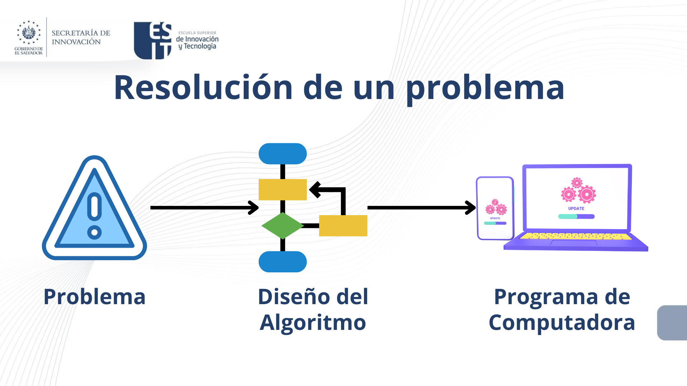

1. Conceptos Fundamentales de Programación
2. Algoritmos y sus Caracteristicas
Un algoritmo son los procedimientos finitos a seguir que señalan paso a paso la solución de un problema. Hipotéticamente, pongámonos en el caso de que estamos con José una persona la cual en su vida ha estado en una cocina y no tiene idea como servir una taza de té.
¿Cuál seria el algoritmo que deberíamos indicarle a José para enseñarle a servirnos una taza de té?
Una posible solución para crear un algoritmo para preparar una taza de té seria:
- Buscar la Tetera.
- Revisar si tiene agua.
- Si tiene agua, saltar al paso 5.
- Llenar 1/4 de la tetera con agua.
- Buscar fósforos.
- Si hay fósforos, saltar al paso 8.
- ir a comprar fósforos.
- Encender la cocina.
- Colocar la tetera y esperar que hierva.
- Buscar un par de tazas limpias.
- Si no hay tazas limpias, lavar 2 tazas.
- Colocar una bolsa de te en cada taza.
- Agregar el agua hervida a un 3/4 de cada taza.
- Colocar cucharas y azúcar en la mesa.
- Sentarse a tomar el té.
La resolución de un problema exige el diseño de un algoritmo que resuelva el problema propuesto.
Los pasos para la resolución de un problema son:
1. Diseño del algoritmo, que describe la secuencia ordenada de pasos, sin ambigüedades, que conducen a la solución de un problema dado. (Análisis del problema y desarrollo del algoritmo.)
2. Expresar el algoritmo como un programa en un lenguaje de programación adecuado. (Fase de codificación.)
3. Ejecución y validación del programa por la computadora, para llegar a la realización de un programa es necesario el diseño previo de un algoritmo, de modo que sin algoritmo no puede existir un programa.
Los algoritmos son independientes tanto del lenguaje de programación en que se expresan como de la computadora que los ejecuta. En cada problema el algoritmo se puede expresar en un lenguaje diferente de programación y ejecutarse en una computadora distinta; sin embargo, el algoritmo será siempre el mismo. Así, por ejemplo, en una analogía con la vida diaria, una receta de un plato de cocina se puede expresar en español, inglés o francés, pero cualquiera que sea el lenguaje, los pasos para la elaboración del plato se realizarán sin importar el idioma del cocinero.
Características de un algoritmo
Preciso
Un algoritmo debe ser preciso e indicar el orden de realización de cada paso.
Definido
Un algoritmo debe estar bien definido. Si se sigue un algoritmo dos veces, se debe obtener el mismo resultado cada vez.
Finito
Un algoritmo debe ser finito. Si se sigue un algoritmo, se debe terminar en algún momento; o sea, debe tener un número finito de pasos.
Obra publicada con Licencia Creative Commons Reconocimiento Compartir igual 4.0